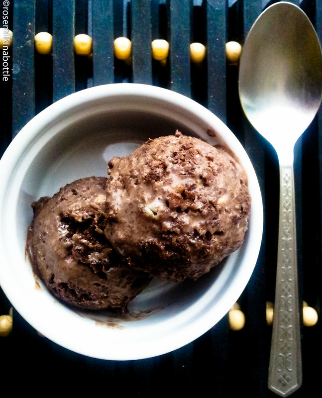

Main
Chocolate Ice Cream

Info:
- Serves: 6-8 people
- Preparation time: 20 mins
- Difficulty: Easy
Ingredients
- 200g of dark chocolate (at lest 70% cocoa solids) chopped into small pieces
- 500ml of double cream
- 340g can sweetened condensed milk
- 1 teaspoon of vanilla extract
- 3 tablespoons organic cocoa powder sifted
- 50g milk chocolate chips
- sea salt flakes (optional extra for serving)
Preparation
- Melt the chocolate in a heatproof bowl set over a pan of just-simmering water, ensuring
the bowl doesn’t touch the water, or do this in the microwave in 20-second bursts until
smooth and glossy. Leave to cool slightly.
- Pour the cream, condensed milk and vanilla into a second bowl and beat for 3 mins using an
electric whisk until slightly thickened and the beaters leave a trail in the mixture when
lifted across the bowl. Be careful not to overwhip, as you don’t want the mixture to be too
stiff – as soon as the beaters leave a trail, it’s ready.
- Gently fold the melted chocolate and cocoa powder into the cream mixture until thoroughly
combined, ensuring the spatula is reaching the bottom of the bowl so all the chocolate gets
mixed in. Fold in most of the chocolate chips, reserving a small handful.
- Scrape the mixture into a 1-litre freezerproof container, then scatter over the reserved
chocolate chips.
- Cover and freeze for at least 6 hrs until firm but scoopable. Will keep frozen for up to
a month.
- To serve, scoop the ice cream into chilled bowls or ice cream cones and sprinkle with a pinch
of sea salt, if you like.